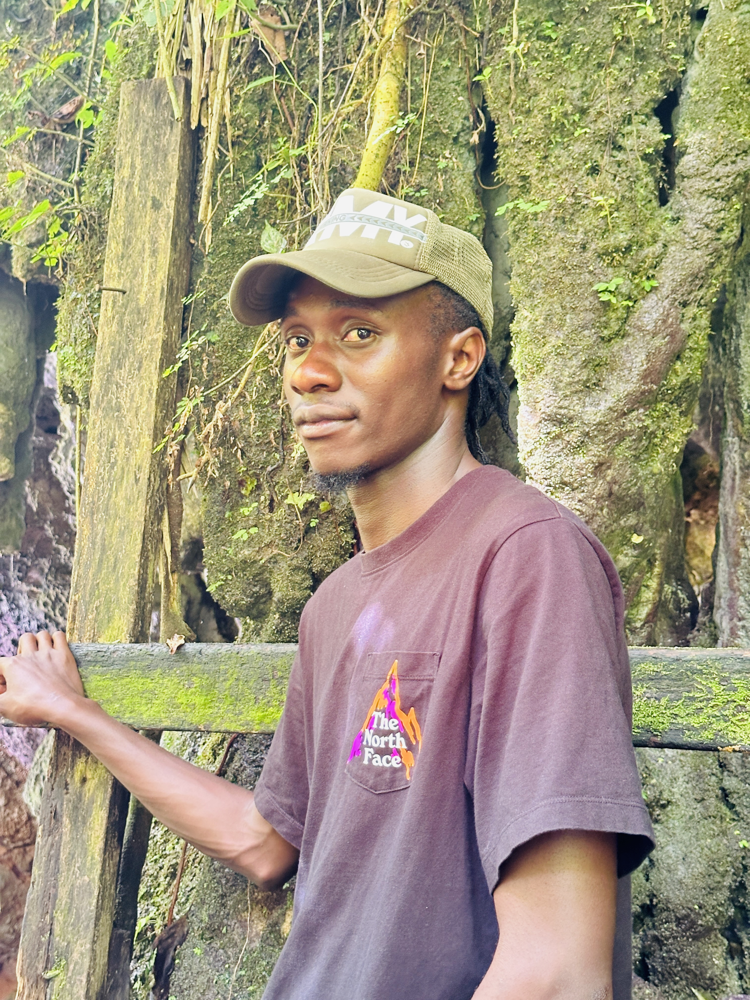
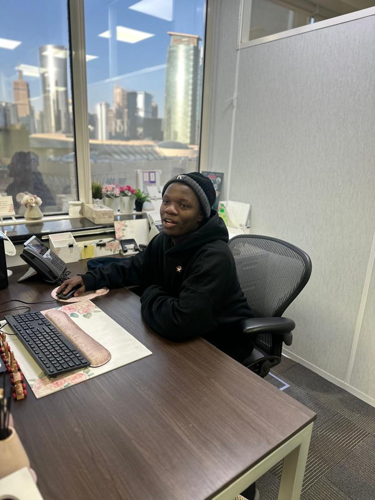

Emily Watson
🇬🇧 United KingdomMy First Gorilla Trek
I had waited years for this moment. Seeing mountain gorillas in Bwindi was emotional, unforgettable and beautifully organized by Blendava Tours & Travel.
Experience unforgettable adventures through the eyes of our happy travelers and professional safari guides. Watch real journeys, authentic wildlife encounters, breathtaking gorilla trekking, exciting game drives and beautiful moments across Uganda.
Every video tells a unique adventure. From the misty forests of Bwindi to the vast plains of Queen Elizabeth National Park, discover why thousands of travelers choose Blendava Tours & Travel for unforgettable African safaris.
I had waited years for this moment. Seeing mountain gorillas in Bwindi was emotional, unforgettable and beautifully organized by Blendava Tours & Travel.

Our guide knew exactly where to find wildlife. We watched lions, elephants, buffaloes, giraffes and countless antelopes. Every minute of the game drive was unforgettable.

Watching elephants drinking from the river while hippos surrounded our boat was one of the greatest wildlife experiences I've ever had.

Beyond wildlife, I discovered Uganda's welcoming people, traditional dances, delicious local cuisine and rich culture. Blendava created memories that will last forever.
Our experienced guides know Uganda better than anyone. Hear their inspiring stories, conservation efforts and unforgettable wildlife encounters.
Our guide knew exactly where to find wildlife. We watched lions, elephants, buffaloes, giraffes and countless antelopes. Every minute of the game drive was unforgettable.
Watching elephants drinking from the river while hippos surrounded our boat was one of the greatest wildlife experiences I've ever had.
Beyond wildlife, I discovered Uganda's welcoming people, traditional dances, delicious local cuisine and rich culture. Blendava created memories that will last forever.

Meet Brenda – Professional Safari Guide
Born and raised in Entebbe, Uganda, Brenda is a dedicated and passionate safari guide with over five years of professional experience in the tourism industry. She holds a Bachelor's Degree in Tourism and Hospitality Management, which has equipped her with extensive knowledge of Uganda's wildlife, conservation, culture, and sustainable tourism.
Brenda has traveled to Kenya, Tanzania, Ethiopia, Qatar, Dubai (United Arab Emirates), the United Kingdom, and Switzerland, gaining valuable international experience and a deeper understanding of different cultures and global tourism standards. These journeys have strengthened her ability to provide exceptional service to travelers from all over the world.
As a professional safari guide, Brenda leads exciting game drives, gorilla trekking expeditions, chimpanzee tracking adventures, bird-watching tours, nature walks, cultural experiences, and customized luxury safaris across Uganda and East Africa. She also assists guests with travel planning, wildlife interpretation, photography opportunities, safety briefings, and ensuring every safari runs smoothly from beginning to end.
Known for her warm hospitality, patience, professionalism, and friendly personality, Brenda is passionate about wildlife conservation and enjoys sharing fascinating stories about Uganda's national parks, animals, birds, and local communities. Her goal is to create unforgettable experiences that leave every traveler with lifelong memories.
Brenda says:
"Seeing the excitement on a traveler's face when they spot a lion for the first time or come face-to-face with mountain gorillas reminds me why I love being a safari guide. Every adventure is unique, every guest has a different story, and it is my privilege to help people discover the incredible beauty, wildlife, and culture of Uganda."

Meet Andy – Professional Safari Guide Born and raised in Entebbe, Uganda, Andy developed a deep appreciation for nature, wildlife, and tourism from an early age. He attended Entebbe Secondary School, where his interest in Uganda’s rich biodiversity and cultural heritage began to grow. For the past five years, Andy has worked as a professional safari guide with a passion for creating unforgettable travel experiences. His friendly personality, professionalism, and extensive knowledge of Uganda’s wildlife make every journey both educational and exciting. Over the years, Andy has broadened his global perspective by traveling to Kenya, Tanzania, Dubai, Ethiopia, Qatar, the United Kingdom, and Switzerland. These international experiences have strengthened his understanding of different cultures and enhanced the quality of service he offers to travelers from around the world. Whether guiding guests through the breathtaking forests of Bwindi during gorilla trekking, leading thrilling game drives across Uganda’s national parks, or sharing fascinating stories about wildlife, birds, landscapes, and local communities, Andy is dedicated to ensuring every safari is safe, memorable, and inspiring. Professional Skills * Professional Safari Guiding * Wildlife Identification and Interpretation * Gorilla Trekking Guide * Game Drive Leadership * Bird Watching Tours * Nature and Conservation Education * Customer Care and Hospitality * Tour Planning and Coordination * Photography Assistance for Travelers * First Aid and Visitor Safety * Cross-Cultural Communication * Leadership and Teamwork * Excellent English Communication * Problem Solving and Emergency Response Andy’s Motto “The greatest reward is seeing a guest smile after experiencing Uganda’s incredible wildlife. Every safari is a new story, every journey is an adventure, and every traveler leaves with unforgettable memories.”

Meet Shone – Tour Operator, Safari Guide & Software Programmer Shone is a passionate tourism professional and technology enthusiast dedicated to creating exceptional travel experiences across Uganda and East Africa. He began his education at Our Lady of Gayaza Secondary School, continued his studies at Namagabi Secondary School (SSS), and later pursued higher education at Kampala International University (KIU). With expertise in both tourism and technology, Shone serves as a professional tour operator, experienced safari guide, and software programmer. His unique combination of technical skills and extensive travel experience enables him to deliver innovative travel solutions while ensuring every guest enjoys a safe, memorable, and well-organized safari. Over the years, Shone has traveled to Uganda, Ethiopia, the United Kingdom, Dubai (United Arab Emirates), Norway, Germany, Tanzania, Kenya, the Democratic Republic of the Congo, and South Africa. These international experiences have broadened his understanding of different cultures, destinations, and world-class tourism standards, allowing him to provide outstanding service to travelers from around the globe. Whether planning customized safari itineraries, guiding guests through Uganda’s spectacular national parks, developing modern tourism technology, or coordinating luxury travel experiences, Shone is committed to delivering excellence, professionalism, and unforgettable adventures. What Shone Does * Designs and manages customized safari packages * Leads wildlife safaris and gorilla trekking tours * Coordinates travel logistics and tour operations * Develops tourism websites and digital booking systems * Advises travelers on destinations, visas, and travel planning * Promotes sustainable and responsible tourism * Works closely with hotels, lodges, airlines, and local partners * Provides exceptional customer service before, during, and after every trip Professional Skills * Tour Operations Management * Professional Safari Guiding * Gorilla Trekking Coordination * Wildlife Interpretation * Travel Planning and Itinerary Design * Customer Care and Hospitality * Leadership and Team Management * Cross-Cultural Communication * Website Design and Development * Software Programming * Digital Marketing for Tourism * Booking System Management * Problem Solving and Decision Making * Photography and Travel Content Creation * Public Speaking and Presentation Skills * Excellent English Communication * Teamwork and Project Management Shone’s Motto “Travel has the power to connect people, cultures, and nature. My mission is to combine technology, professionalism, and a passion for adventure to create unforgettable journeys that inspire every traveler.”